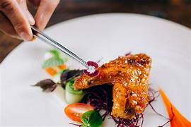
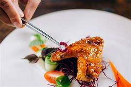

Gà Chiên Nước Mắm
-
Thành phần
- Gà 450 Gr
- Nước Mắm 3-4 muỗng canh
- Đường 2 muỗng canh
- Tỏi(băm nhỏ) 3-4 tép tỏi
- Ớt 1-2 trái
- Chanh 1/2 quả
- Dầu Ăn 10 ml
- Muối, Tiêu
Hướng dẫn thực hiện
Ướp thịt gà với 1/2 muỗng cafe hạt nêm, 1/3 muỗng cafe bọt ngọt, 1/2 muỗn cafe tiêu xay, trộn đều và ướp trong vòng 15 phút.


Chuẩn bị nước mắm đường gồm 2 muỗng canh đường, 3 muỗng canh nước mắm và khoáy tan đường sau đó cho muỗng canh nước cốt canh vào. Chia nước mắm thành 2 phần bằng nhau, 1 phần thì cho thêm tỏi và ớt băm vào, phần còn lại cho 1 muỗng cafe ớt bột.


Đổ dầu vào chảo và đợi nóng dầu, cho gà vào chiên đến da chuyển vàng thì vớt ra. Sau đó khử dầu bằng tỏi, cho hỗn hợp nước mắm ớt bột vào đợi cho hỗn hợp keo thì cho gà vào và đảo cho gà thấm đều.


Bỏ ra dĩa và trang trí.

 
